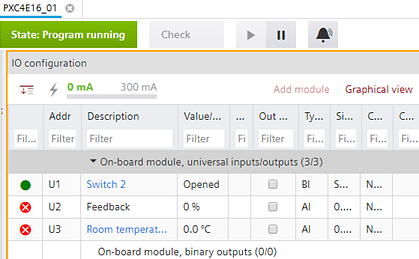

I/O 配置
要打开I/O configuration任务选择Building > Building structure并双击总线接口模块。
使用I/O configuration将 TX-I/O 设备添加到总线接口模块并配置信号类型及其属性的任务。
Basic engineering workflow
Device list
1 | 任务选择器 | 2 | 植物导航视图 |
3 | 工具栏 | 4 | I/O 配置区 |
5 | 库和属性 |
| |
① Task selector
任务 | 描述 |
|---|---|
I/O 配置 | |
MODBUS | |
M总线 | |
KNX PL-Link | |
BACnet references | |
BACnet objects | |
编程 |
② Plants navigation view
显示创建的 I/Os.
命令 | 描述 |
|---|---|
打开/close文件夹结构。 | |
| 隐藏/unhide工厂信息。 |
添加数据点 | 打开Add data point您可以在其中创建新数据点的对话框。必须选择植物才能激活该功能。 |
分配全部 | 自动将所有创建的 I/Os 分配给 TX 模块的端子。 |
植物焦点设置为自动放置目的地。在Graphical vieworTabular view 从库中新添加到 I/O 模块的对象将分配给该设备。 | |
| 未将植物焦点设置为自动放置目的地。可以随时通过拖放将对象分配给工厂或较低级别。 |


确保没有剩余未分配的 I/Os，因为所有 I/O 都已加载到总线接口模块中。未分配的 I/Os 可能会在设备中产生配置错误。
③ Toolbar
命令 | 描述 |
|---|---|
|
状态 | 指示应用程序的状态。绿色表示应用程序在线并正在运行或暂停。
|
查看 | 检查重复名称、I/Os 数量、趋势限制等。该检查在加载设备之前自动执行。 |
（玩） | 仅当设备在线时可见。激活在线会话并加载所选设备的更改。 |
（暂停） | 仅当设备在线且在线会话启动时可见。停用活动的在线会话。 |
（令人震惊） | 出于测试目的暂时抑制所有警报。 Note：如果由于现场设备状态为“Device-Missing”而触发多个报警（执行报警喷发），则仅将“Device-Missing”报警发送给相应的接收者。这可确保用户不会收到且必须确认多个警报。 |
Example of an activated online session

④ I/O Configuration area
包含以下元素。
- Tools such as the estimated power consumption bar
- Module assignment table (Tabular view)
- TX-I/O graphical view with drag functionality
元素 | 描述 |
|---|---|
展开/collapse所有扩展模块。 | |
估计耗电量吧。显示与最大可能消耗相比的实际功耗的条形图。 Note：计算所需电量时，始终会估计总消耗量。分配有效数据点/signal类型后，所需的功耗可能会降低。 | |
添加模块 | 打开Add module对话框。选择 TX 模块的类型和地址。 |
表格视图/Graphical视图 | 您可以在之间切换Tabular view选项卡和Graphical view选项卡。 |

模块分配表显示 TX-I/O 模块以及已分配的 I/Os. 单击Add module打开可用模块和附件的列表。
InGraphical view您可以将数据点拖动到设备和 I/O 模块。
TX-I/O rail engineering
⑤ Library and Properties
这Library和Properties右侧区域可以切换。这Library视图包含可以直接拖动到工作区域的元素。
Library
这Property视图显示所选元素的属性。中显示的项目Property 视图取决于所选对象类型。
您还可以设置Signal输入Property 看法。但请确保模块支持该信号类型，否则 I/O 将从模块中取消分配。